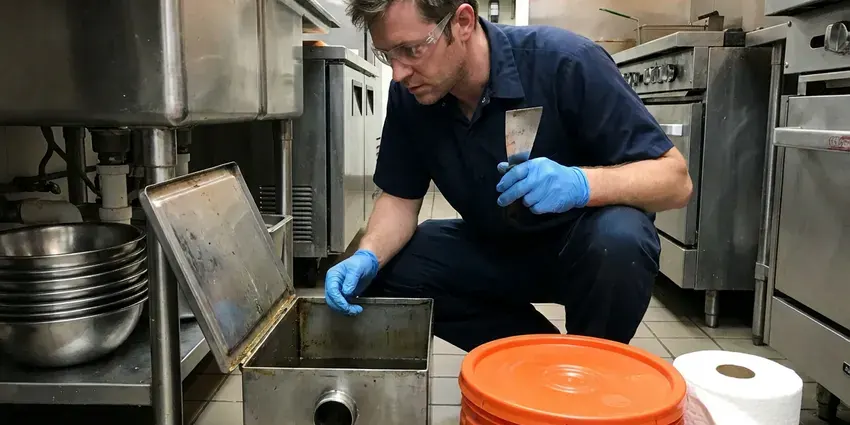

Insinkerator Installation in Henderson, NV
From quick swaps to first-time installs, our Henderson, NV plumbers set InSinkErator units that run without rattling and drain fast.
- Water Tested Before We Leave
- Next-Day Disposal Swaps
- Badger and Evolution on the Truck
- Price Before Work Starts

Disposal Installation in Henderson, NV
Call (725) 360-1766 and we will match the right InSinkErator model to your sink and household.
InSinkErator Installation Done Right in Henderson, NV
FMR Plumbing handles the full InSinkErator setup: quick-lock mount, cord kit or hardwire, dishwasher knockout and discharge tube. Nothing gets left for you to finish. We test with running water, a small grind load and a dishwasher drain cycle, then check every joint before we pack up.
Work we handle every week:
- Anti-vibration mounting
- Properly grounded electrical connections
- Dishwasher drain tested with the unit running

Additional Kitchen Plumbing Services in Henderson, NV
Our kitchen plumbing services in Henderson, NV cover sinks, disposals, dishwashers, and grease traps so your kitchen keeps running without backups or leaks.




Henderson grease trap cleaning specialists

Customers
Why Choose FMR Plumbing for Insinkerator Installation in Henderson, NV?
Horsepower is where people overspend. A Badger 5 handles most two-person kitchens. A large family that cooks every night is better served by a 3/4 HP Evolution, since it grinds finer and stays quieter on fibrous scraps.
- Right-Sized Motors, We match horsepower to how much you cook and whether the house is on septic.
- Clean Work, We cover the cabinet floor and take the old unit and the debris with us.
- Labor Guarantee, Our workmanship is covered by a written guarantee, separate from the unit warranty.
Citywide Coverage
Stainless or composite, single bowl or farmhouse, our trucks carry the mounting hardware for the sinks found across Henderson. For composite, we use a gasket in place of putty. Putty can stain some composite and stone sinks, so we check the sink maker's notes and use the rubber gasket that ships with the InSinkErator when the sink calls for it.
Experienced Team
Hundreds of installs have taught our plumbers the quirks of each mount design. A Badger 5 swap takes them under an hour. They also know how to work around a garbage pull-out or a water filter canister without forcing a disposal into a spot where it rubs against something and vibrates.
Safety-First Approach
Breakers go off before any wire is touched, and they stay off until the cover plates are back on. We tag the panel while we work. That small habit keeps a family member from flipping it back on while a plumber has their hands in the junction box, which happens more often than you would think.
Trusted Certified Henderson Plumbing Services Professionals
At FMR Plumbing, we are proud to offer certified plumbing services throughout Henderson, NV. Those papers on the wall mean something. Every repair, install and maintenance visit follows strict safety and quality rules, and the plumbers doing the work carry recognized industry credentials.
Call Us Now PHCC Plumbing Contractor Recognition
PHCC Plumbing Contractor Recognition Better Business Bureau (BBB) Accreditation
Better Business Bureau (BBB) Accreditation Angi Certified Pro
Angi Certified Pro ISO 9001 Quality Management Certification
ISO 9001 Quality Management CertificationDependable InSinkErator Installation in Henderson, NV
Same-Day Disposal Replacement in Henderson, NV
A dead disposal stops the whole kitchen. Dishes pile up. With Badger and Evolution units, cord kits and fittings on the truck, we can usually replace a failed unit the same day on a morning call. A call late in the day usually means an early slot next morning.

Dishwasher Connection and Air Gap Setup in Henderson
Nearly every InSinkErator has a dishwasher inlet with a factory knockout plug inside. The plug gets knocked loose and pulled out of the grind chamber. Then the dishwasher hose goes on with a proper clamp, routed through an air gap or up into a high loop under the counter so sink water cannot siphon back into the dishwasher tub. We test both appliances at once.
Upfront Disposal Installation Pricing in Henderson, NV
Price depends mostly on two things: the unit you pick and how much needs to change under the sink. A like-for-like swap is the low end. First-time installs run higher, since a new flange and possibly a new outlet both add labor. We quote the job before any tools come out.
Badger Series Installation in Henderson, NV
The Badger line runs from the 1/3 HP Badger 1 up to the Badger 5XP. All of them use the same quick-lock mount. That shared mount is why a Badger-to-Badger swap is often a 45-minute job, since the upper ring and flange can stay put if they are not corroded. No cord comes in the box, so the cord kit is on us.
Garbage Disposal Replacement in Henderson
If your current disposal hums, leaks from the bottom or trips its reset button every week, replacement usually beats repair. Water from the bottom of the housing means the inner seal failed. That seal cannot be fixed. We take down the old one, keep the dishwasher hose capped and set the new unit to the existing drain, trimming the tailpiece if the height changed.
Commercial Kitchen Disposer Service in Henderson
Commercial kitchens put more through a disposer in a day than a house does in a month. Every hour down costs sales. We schedule installs before opening or after close, set the unit on a dedicated circuit with its control panel at a reachable height, and plumb the flushing water so the grind chamber never runs dry. Ask about your local rules on disposers ahead of a grease interceptor.
Septic-Friendly Disposal Installs in Henderson, NV
Homes on septic can run a disposal, but food solids add load to the tank. Septic systems and private wells are common in rural Nevada, while most city homes are on municipal water and sewer. InSinkErator's Septic Assist feeds an enzyme solution into the chamber during each run to start breaking down waste before the tank. The enzyme cartridge gets mounted, and we show you the refill. Scrape plates first.

Disposal Installation Cost Comparison in Henderson, NV
Cost differences come mostly from the unit and the prep work. A Badger 5 swap with a cord kit is at the bottom of the range. An Evolution Excel in a kitchen that needs a new flange and a lowered trap arm sits at the top, and most jobs land somewhere between. We put horsepower and warranty side by side.
InSinkErator Installation Near Me in Henderson, NV
Need an InSinkErator installed fast? Our local plumbers can be at your door the same day in most cases. We keep the popular Badger and Evolution models on the truck, so most homes in the area need no special order and no second appointment. A Pro series unit may take an extra day.
Local plumbers know the kitchens in Henderson. A lot of older houses still have cast iron or galvanized drains in the wall. Newer builds tend to have PVC with a shallow-sink trap arm, and that becomes a problem once a deep bowl and tall disposal go in together. We plan for both.
FMR Plumbing at a Glance
- Fully licensed plumbing team covering Henderson, NV
- 24/7 emergency service with same-day scheduling
- Clear written estimates, no hidden fees
- 4.8-star rated by 903+ Nevada customers
Henderson Map
Henderson Information
- Population
- 337,305
- Area codes
- 702/725/775
- Service area
- Henderson and towns within a 40 mile drive
- Nearby
- Whitney, Paradise, Winchester, Enterprise
Scale collects on grind rings and tailpieces faster than most people expect. Mineral deposits clog aerators, showerheads and valves, which is why softeners and regular water heater flushing are popular.
Expert Services
Call FMR Plumbing for reliable plumbing work done by licensed pros in Henderson, NV.
Our Specialized Plumbing Services in Henderson, NV
At FMR Plumbing, you get every kind of plumbing service from one company across Henderson, NV. We go from leak detection all the way to full system installations, for homes and commercial buildings, and we do it quickly at a fair price. Here are the core services we offer:


How Our InSinkErator Installation Visit Goes in Henderson, NV
Three steps, most of the time finished in one trip, for every InSinkErator we install in Henderson, NV.
Request a Quote
Call (725) 360-1766 or fill out our online form. Tell us the sink type and the current disposal, and we will quote it before the visit.
Old Unit Removal
The plumber kills the breaker, disconnects the dishwasher hose and takes the old unit down. The flange area gets cleaned of old putty.
New Installation
The new flange, mount and unit go in, then the discharge tube and dishwasher hose. Wiring is checked for ground before power goes back on.
Frequently Asked Questions About Insinkerator Installation in Henderson
Installed, most InSinkErator replacements cost between $300 and $800. A Badger 5 is the low end. At the top is the Evolution Excel, and first-time installs with new outlet or flange work can go higher.
Every residential model InSinkErator currently sells, plus commercial units. We carry Badger and Evolution units on most trucks. Pro series and commercial disposers sometimes need a day to order, and we confirm the model number with you by phone so the right one is waiting when the plumber shows up.
Water dripping from the bottom of the housing means replacement. The leak comes from a seal inside. A jam can usually be cleared with the hex key, though a motor that hums or trips weekly is cheaper to replace than to chase.
It depends on the model. Entry Badger units carry about two to three years in-home. Top Evolution models carry up to ten years of in-home service, where InSinkErator sends a tech to your house, and our own labor guarantee covers the install on top of that.
Plenty of handy people do. The mistakes are predictable, though. A dishwasher knockout left in place and an ungrounded cord kit are the two we see most.
Start with how you cook. A Badger 5 suits a small household that cooks lightly. Big families who cook a lot, or anyone bothered by noise, do better with an Evolution, while septic homes suit the Septic Assist.
Yes, but scale will build on the grind parts over time. Run cold water every time. Cleaning it now and then helps the drain, and stainless grind parts on Evolution units resist scale better.
Not for a simple replacement, in most places. New circuits are the usual exception. Major drain changes may need one too, and we flag it before the job is scheduled.
What Our Customers Say About Our Plumbing Experts

Daniel K.
A pipe burst in the garage ceiling at 11 at night. Someone answered on the second ring, and the plumber was in my driveway about fifty minutes later. He shut off the main, cut out the split section, and had water back on before 2 am.
Emergency Plumbing · Spring Valley, NV
Kevin O.
Before buying our house I paid for a sewer camera inspection. FMR Plumbing found a belly in the line that held standing water about forty feet from the cleanout. We used the video to get the sellers to fix it before closing.
Sewer Camera Inspection · Winchester, NVTyler J.
We bought a taller comfort height toilet for my dad, who just had knee surgery. The plumber pulled the old one, found the flange was cracked, and replaced it before setting the new bowl. Took about two hours.
Toilet Installation · Enterprise, NV
Emily R.
The shutoff valve under our kitchen sink snapped off in my hand on a Sunday morning. FMR Plumbing had someone out by early afternoon. He replaced both angle stops with quarter turn valves and showed me where our main shutoff was, which I honestly did not know.
Plumbing Repair · Winchester, NVLisa C.
Water was pouring out from under the washing machine on a holiday weekend. FMR Plumbing talked me through closing the valves over the phone and had a plumber at the house within ninety minutes. It was a burst fill hose.
Emergency Plumbing · Spring Valley, NVMegan L.
Our upstairs tub drained so slowly that every shower turned into a bath. FMR Plumbing pulled a wad of hair out of the stopper and then snaked the line past the trap. Three months later it still drains fast.
Drain Cleaning · Spring Valley, NV